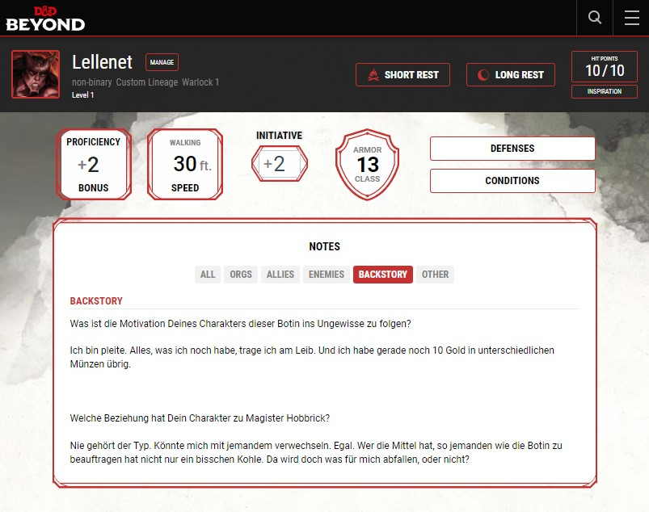

Session 0
Das hier ist die Agenda und für die Session 0. Alle Festlegungen in Session 0 habe hier festgehalten.
Vorstellungsrunde
Jede/r stellt sich kurz vor. Du kannst Dich z.B. daran orientieren:
- Wie heißt Du? Hast Du bestimmte Namensvorlieben oder Spitznamen? (ja, ok, IRL)
- Was machst Du sonst so wenn Du nicht Dungeons und Dragons spielst?
- Hast Du schonmal gespielt? Kennst Du Dungeons und Dragons (5. Edition)? Wie lange ist das her? Spielst Du mehr als diese Runde?
- Was hat Dich am meisten begeistert hier mitzumachen?
Hintergrundgeschichte
Das Spiel wird damit beginnen, dass Du einer geheimnisvollen Botin gefolgt bist, die Dir einen Briefumschlag überreicht hat, dessen Inhalt Dich zum Erben eines gewissen Magister Hobbrick erklärt, der im Alter von 787 Jahren aber bereits vor 90 Jahren gestorben ist. Die Erben von Herrn Hobbrick bestehen grob aus zwei Gruppen: seinem weit verzweigten Stammbaum oder den Abkömmlingen seiner ehemaligen Schiffsbesatzung mit der er vor Jahrhunderten gefahren ist.
Beantworte die Fragen:
- Was ist die Motivation Deines Charakters dieser Botin ins Ungewisse zu folgen?
- Welche Beziehung hat Dein Charakter zu Magister Hobbrick? (“Ich kenne den Typen gar nicht”, ist eine plausible Antwort)
Notiere die Antworten in Deinem digitalen Charakterbogen auf D&D-Beyond unter “Notes -> Backstory”. Du kannst natürlich mehr als diese Antworten als die Hintergrundgeschichte Deines Charakters verfassen. Ich als Spielleiter schaue da rein. Aber ein Tipp aus Erfahrung: weniger ist mehr.

Regeln
- Wiederholung der Festlegungen im Abschnitt zum Spiel.
- Gemeinsame Festlegung: Milestones oder Erfahrungspunkte?
- Gemeinsame Festlegung: Hit Points würfeln oder fester Wert?
- Gemeinsame Abstimmung der Hausregeln.
- Gemeinsam auf die “Benimm”-Regeln schauen:
“Benimm”-Regeln
Regeldebatten. Wenn wir nicht genau wissen, wie es geht und wir nicht schnell genug herausfinden, was genau die Regel in diesem Moment ist, dann lege ich was fest und hinterher gibt es ein Errata.
Würfeln. Ihr könnt würfeln wie ihr möchtet. Mit einem echten Würfel bei euch am Tisch oder mit dem digitalen Würfel auf D&D-Beyond oder mit Hilfe des Discord-Bots bei uns im Channel. Wichtig ist, dass ihr das Würfeln gut beherrscht. Hört sich komisch an. Ist aber so. Nach meiner Erfahrung gibt es Leute, die das digitale Würfeln zwar cool finden, aber die Technologie nicht beherrschen. Sobald so Dinge wie Vorteile oder Nachteile ins Spiel kommen, kämpfen manche Spieler:innen mehr mit den Tools als mit den Monstern. Von daher hat sich der analoge Würfel bewährt, mindestens mal für die D20-Tests. Würfelergebnisse sagt ihr egal wie ihr würfelt selbst an. Bei Würfel muss niemand was sehen, es geht um den Spaß, warum sollten wir uns da also gegenseitig nicht vertrauen. Zur Erinnerung: all good stories start with a 1.
Warnung
Ihr würfelt niemals einfach so. Gerade beim digitalen Würfel, wenn die Ergebnisse per Notification in den Discord Channel gepostet werden, ist das nervig. Ich als Spielleiter sage einen Wurf an, ihr würfelt. Ihr sagt zum Beispiel, “ich schleiche mich an dem Goblin vorbei”. Ich sage dann, “würfel auf Stealth”. Ihr würfelt und sagt das Ergebnis durch. Was nicht geht ist: ihr würfelt, schaut euch das Ergebnis an und sagt dann: “Ich habe gerade eine 18 auf Stealth gewürfelt. Ich schleiche mich am Goblin vorbei.” Dieses Vorgehen wird für euch nicht gut ausgehen.
Initiative. Der Kampfablauf in Dungeons und Dragons ist rundenbasiert. Für jeden Kampf wird einmal die Reihenfolge bestimmt, die berühmnte “Initiative”. Bitte merkt euch eure Position in der Reihenfolge und macht euch vor eurem Zug Gedanken, was ihr machen wollt. Der Sinn dieser Bitte ist: wenn ihr erst überlegt, wenn ihr an der Reihe seid und zögert, nehmt ihr allen anderen die Spielzeit. Wenn ihr - gerade am Anfang - nicht wisst, was ihr machen sollt, fragt ruhig eure Mitspieler:innen! Eine gute Methode ist für sich selbst eine “GoTo”-Aktion zu überlegen, also was macht euer Charakter normalerweise in einem Kampf: einen Angriff mit einer Nahkampfwaffe, mit einer Fernkampfwaffe oder wird ein Zaubertrick geschleudert? Und von dieser “GoTo”-Aktion dann bei Bedarf abzuweichen.
Inhalt
Freiwillige Selbstkontrolle
Vorschlag:

Lines and Veils
Lines sind Themen oder Aktionen, die ihr nicht im Spiel haben wollt. Also quasi rote Linien. Grundsätzlich bietet das geplante Setting erstmal wenig rote Linien an, ein Hauptthema im Spelljammer-Teil ist drohende oder tatsächliche Massenvernichtung ganzer Welten. Planescape ist “Strange”, Sigil noch eingermaßen geregelt, im Abyss oder in den Neun Höllen geht es schon recht ruppig zu. Es kommt also sehr auf euch an, mir zu sagen, was eure (roten) Linien sind.
Lines:
- Kinder umbringen
- Kindesmissbrauch
Veils sind Themen die zwar vorkommen, aber die ihr nur relativ vage beschrieben haben wollt. Sex gehört da häufig mit dazu. Es kommt schon vor, aber die “Kamera” blendet dann relativ schnell weg. Hollywood Style. Auch die Massenvernichtung im Star Wars Episode IV ist so ein “Veil”. Gebt mir einen Hinweis auf Themen, die für euch hinter den Schleier des Weichzeichners sollen.
Veils:
- Gräueltaten. Können vorkommen, werden aber eher Nachrichtentechnisch abgehandelt.
- Ausführliche “Splatter”-beschreibungen. Das spritzende Blut muss nicht in die Länge gezogen werden.
- Sex. Kommt bestimmt vor, wird aber mit einem Weichzeichner versehen.
X-Karte
Wenn immer es zu Handlungen oder Szenen kommt, bei denen ihr euch nicht wohl fühlt, könnt ihr die “X-Karte” ausspielen. Ihr sagt “X-Karte” oder “X-Card” und könnt auch die Arme vor der Kamera kreuzen. Es wird keine Erklärung erwartet. Als Spielleiter railroade ich dann in die nächste Szene.
Balance
Ausbalanciert. Von allem etwas.
Level 1 2 3 4 5
-----------------------
Kampf : X X X . .
Erforschung : X X X . .
Rollenspiel : X X X . .
Schwierigkeitsgrad
Wir benutzen keine der optionalen Regeln, um Dungeons & Dragons schwieriger zu machen. Wir spielen nach den “Vanilla”-Reglen. Dennoch: nicht jede Begegnung, nicht jeder Kampf wird erfolgreich sein. Es kann dazu kommen, dass die Würfel tödlich für euch fallen. Als Spielleiter greife ich dann gegebenenfalls und nutze die Würfel vielleicht nicht genau so wie sie hinter meinem Schirm fallen. Als Daumenregel greife ich dann ein, falls es sich umunverschuldetes Pech handel, eine Folge von wirklich schlechten Würfelwürfen, einem Tod in einer bedeutungslosen Situation, etc. Es gilt aber auch die Randbedingung, dass ich das eher dann mache, wenn ihr keine Möglichkeiten habt, die Folgen abzuwenden. Aber bewusste und eindeutige Entscheidungen von Spielercharakteren sind bewusste und eindeutige Entscheidungen und da mache ich nix dran. Außerdem, je mehr euch sowas wie Revivify oder Raise Dead zur Verfügung steht, desto weniger verbiege ich das Schicksal.
Meta-Wissen
Einige Charaktere haben einen Hintergrund, dass sie etwas über das Setting wissen. Mehr als ihr als Spieler:innen wisst. Das ist kein Problem, ihr könnt jederzeit fragen und der Umfang des Wissens bestimmt dann ein Würfelwurf.
Das gilt übrigens auch falls ihr als Spieler:innen glaubt etwas über das Setting zu wissen. Weil ihr ein Quellenbuch gelesen habt. Oder weil ihr “alte” Quellenbücher gelesen habt. Auch dieses Wissens solltet ihr mit einem Würfelwurf verifizieren. Falls ich Meta-Gaming bemerke, dann werde ich das in die Geschichte mit aufnehmen. Ich denke das wird jedesmal lustig. Für mich.
Spielercharaktere
Wir werfen reihum einen Blick auf die bisherigen Konzepte und Spielercharaktere. Passt das so? Möchte jemand noch was ändern, wenn man mehr über die Charaktere der anderen weiß? Kein Problem, es ist noch 2 Wochen Zeit bis zum Start!
Tools
Ein kurzer Blick auf die Tools aus dem Abschnitt zum Spiel:
- D&D Beyond - Homebrew Content und würfeln
- Discord Channel, Threads, Events und würfeln
- Owlbear.app - Eine Beispielkarte